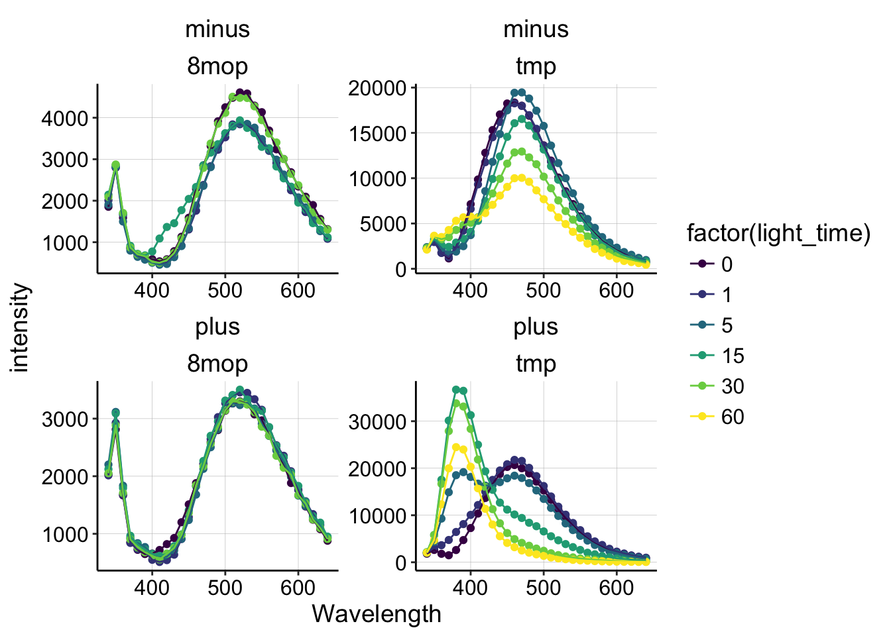

Psoralen Crosslinking In Vitro
Plate Reader Data
11_29_18
library(tidyverse)
library(cowplot)
library(broom)
library(modelr)
library(viridis)
library(lubridate)
library(hms)
knitr::opts_chunk$set(tidy.opts=list(width.cutoff=60),tidy=TRUE, echo = TRUE, message=FALSE, warning=FALSE, fig.align="center")
source("../../tools/echem_processing_tools.R")
source("../../tools/plotting_tools.R")
theme_set(theme_1())Purpose
Recall that Jackie was excited about using a psoralen molecule as a DNA crosslinker to inhibit DNA CT in a biofilm. Psoralen molecules intercalate into DNA, similar to PYO, and upon irradiation with UVA light (365nm) crosslinking reactions are induced. The idea being that psoralen interstrand crosslinks would break pi bonds in the affected nucleotides, inhibiting charge transport. To my knowledge, the effect of psoralen crosslinks on DNA CT has never been tested in vitro.
It turns out that there are many different psoralen derivatives that are available to purchase. Long ago I purchased 8-methoxypsoralen (8MOP), and trioxsalen (trimethylpsoralen - TMP). Upon reading some reviews like this one, psoralen review (Annual Review Biophysics and Bioengineering, 1981), I saw that the different derivatives may have very different binding and crosslinking kinetics with DNA. Therefore, I wanted to confirm in vitro that the psoralen derivative I chose to work with was reacting in the expected way with DNA. So I setup an assay with 8MOP and TMP with or without calf thymus DNA, and with or without UVA light.
Specifically, I set out to do a simple fluorescence based assay to reproduce this figure with the psoralens I had:
knitr::include_graphics("psoralen_crosslink_fluorescence_example.png") You can see that the monoadduct is first formed, which causes a fluorescence shift, then at later times there’s a fluorescence decrease, which is associated with the diadduct/crosslink formation.
You can see that the monoadduct is first formed, which causes a fluorescence shift, then at later times there’s a fluorescence decrease, which is associated with the diadduct/crosslink formation.
Protocol
Briefly, the plan was to incubate the psoralens (8MOP or TMP) with or without calf thymus DNA, and shine 365nm light on eppendorf tubes containing the mixtures for varying amounts of time. In this way, we should be able to distinguish degradation from DNA specific crosslinks.
The fluorescence excitation and emission maxima were found with free psoralen solutions ahead of time. Excitation was at 315nm.
10uM psoralen (from 2mM EtOH stock) was used with calf thymus DNA. I believe the experiment was done in PBS, but I do not remember whether the PBS was 50mM or 137mM NaCl. Also, I believe the experiment was done with the 2mg/mL ctDNA stock diluted 10x, but I cannot be sure. Therefore, I believe the tubes were made with the following:
- 10uM psoralen
- +/- ~200ng/mL ctDNA
- fill with PBS
Then, I irradiated eppendorf tubes with long wave (365nm) UV light from a handheld lamp for 0,1,5,15,30 or 60 min and took fluorescence spectra of the mixtures.
Results
First, I’m going to read in a text file of the plate reader data. Note that this file contains the acquisition parameters from the plate reader. Here I also assign the appropriate metadata to the labeled wells.
df <- read_csv("../Data/psoralen_crosslinking_platereader/10uM_TMP_8MOP_DNA_UVA_Timecourse.csv",
skip = 13) %>% gather(key = label, value = intensity, -Wavelength)
labels <- read_csv(("../Data/psoralen_crosslinking_platereader/psoralen_platereader_label_metadata.csv"))
pr_data <- left_join(df, labels, by = "label")
head(pr_data)## # A tibble: 6 x 6
## Wavelength label intensity molecule DNA light_time
## <int> <chr> <int> <chr> <chr> <int>
## 1 340 8MOP 0 1854 8mop minus 0
## 2 350 8MOP 0 2798 8mop minus 0
## 3 360 8MOP 0 1589 8mop minus 0
## 4 370 8MOP 0 853 8mop minus 0
## 5 380 8MOP 0 669 8mop minus 0
## 6 390 8MOP 0 623 8mop minus 0So, you can see that each well is associated with a specific psoralen (8MOP or TMP), and either contained DNA (plus) or not (minus), and was incubated with the light for between 0 and 60min (light_time).
Let’s look at all of the spectra at once to get a feel for what happened.
ggplot(pr_data, aes(x = Wavelength, y = intensity, color = factor(light_time))) +
geom_point() + geom_line() + facet_wrap(DNA ~ molecule, scale = "free") +
scale_color_viridis(discrete = T)
Ok, we can take a few things away from this plot:
- 8MOP does not undergo significant fluorescence changes under any condition (with or without DNA).
- TMP in solution without DNA (minus) loses fluorescence during 365nm irradiation.
- TMP with DNA (plus) undergoes a dramatic fluorescence shift/change during irradiation.
Already, we can conclude that 8MOP probably did not react to form crosslinks in this experiment, so let’s focus on the TMP condition with DNA.
pr_data %>% filter(DNA == "plus" & molecule == "tmp") %>% ggplot(.,
aes(x = Wavelength, y = intensity, group = factor(light_time),
color = factor(light_time))) + geom_point() + geom_line() +
xlim(340, 540) + ylim(0, 40000) + geom_label(x = 470, y = 25000,
label = "Free TMP", color = "black") + geom_label(x = 380,
y = 40000, label = "Monoadduct", color = "black") + geom_label(x = 347,
y = 25000, label = "Diadduct", color = "black") + scale_color_viridis(discrete = T)
Hopefully, this plot should remind you of figure 4 from the 1981 review (above)! We see a peak around 460 that corresponds to the free TMP, and quickly (after only 5min) we see a peak emerge around 380, which should correspond to the monoadduct. Then at 30 and 60min, we see that 380 peak decrease, which should indicate the formation of the diadduct!
Conclusions
In the past I had attempted to use 8MOP, probably because it was cheaper. These results indicate that 8MOP probably doesn’t form any DNA crosslinks in similar conditions, and therefore it should not be used. Instead TMP, showed a strong fluorescence shift and subsequent decrease that is consistent with mono and diadduct (crosslink) formation. Therefore I will definitely use TMP from now on. 10uM seems like a reasonable amount to use, and I also figured out that its possible to make 2mM stock solutions in ethanol, so I think we have a convenient system to use psoralen now. Small amounts of ethanol are unlikely to affect Pseudomonas.
Moving forward, I would like to directly test the toxicity of TMP + 365nm light on PA cultures. One problem with using TMP to target eDNA, is that TMP likely gets into cells as well…